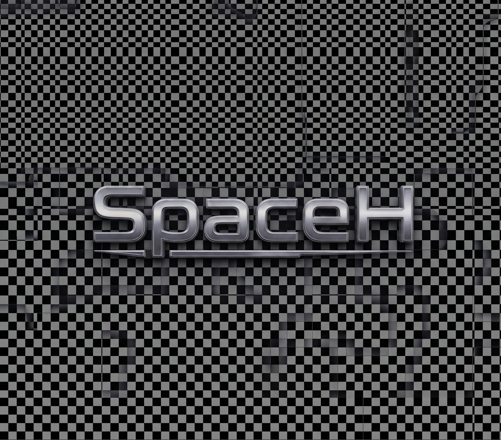

<!DOCTYPE html>
<html lang="es">
<head>
    <meta charset="UTF-8">
    <meta name="viewport" content="width=device-width, initial-scale=1.0">
    <title>AERO-SPACE // 3D Exoplanetary Explorer</title>
    <link rel="stylesheet" href="style.css">
    <!-- Globe.gl 3D Engine -->
    <script src="https://unpkg.com/globe.gl"></script>
</head>
<body>

    <!-- Panel Lateral de Control -->
    <!-- Panel Lateral de Control -->
    <aside id="ui-panel">
        <!-- Logo de SpaceH -->
        <div class="logo-container">
            
        </div>

        <header class="panel-header">
            <div class="status-badge"><span class="pulse-dot"></span> SYSTEM ONLINE</div>

        <!-- Selector de Planeta de Origen -->
        <section class="control-section" id="planet-selector-section">
            <label class="section-title">01. Cuerpo Celeste de Origen</label>
            <div class="select-wrapper">
                <select id="planet-select">
                    <option value="mars">Marte </option>
                    <option value="moon">La Luna </option>
                </select>
            </div>
        </section>

        <!-- Variables de Análisis / Ponderación con Barras Deslizantes -->
        <section class="control-section" id="variables-section">
            <label class="section-title">02. Ponderación de Variables</label>
            <div class="variables-dropdown-wrapper">
                <button type="button" id="variables-dropdown-btn" class="dropdown-trigger-btn">
                    <span class="dropdown-btn-title">
                        <span class="icon">⚖️</span>
                        <span>Pesos de Estudio</span>
                        <span class="badge" id="active-vars-badge">3 Activas</span>
                    </span>
                    <span class="chevron-icon" id="dropdown-chevron">▼</span>
                </button>

                <div id="variables-dropdown-menu" class="variables-dropdown-menu">
                    <!-- Variable 1: Topografía -->
                    <div class="weight-item">
                        <div class="weight-header">
                            <span class="var-name">Topografía (DEM)</span>
                            <span class="weight-val" id="val-topography">75%</span>
                        </div>
                        <span class="var-desc">Altimetría y pendientes del terreno</span>
                        <div class="slider-row">
                            <input type="range" id="slider-topography" class="weight-slider" data-var="Topografía (DEM)" min="0" max="100" value="75" step="5">
                        </div>
                    </div>

                    <!-- Variable 2: Albedo -->
                    <div class="weight-item">
                        <div class="weight-header">
                            <span class="var-name">Albedo Superficial</span>
                            <span class="weight-val" id="val-albedo">60%</span>
                        </div>
                        <span class="var-desc">Reflectancia espectral de radiación solar</span>
                        <div class="slider-row">
                            <input type="range" id="slider-albedo" class="weight-slider" data-var="Albedo" min="0" max="100" value="60" step="5">
                        </div>
                    </div>

                    <!-- Variable 3: GUI -->
                    <div class="weight-item">
                        <div class="weight-header">
                            <span class="var-name">Índice GUI</span>
                            <span class="weight-val" id="val-gui">80%</span>
                        </div>
                        <span class="var-desc">Identificación de Unidades Geológicas</span>
                        <div class="slider-row">
                            <input type="range" id="slider-gui" class="weight-slider" data-var="GUI" min="0" max="100" value="80" step="5">
                        </div>
                    </div>
                </div>
            </div>
        </section>

        <!-- Inserción de Coordenadas -->
        <section class="control-section">
            <label class="section-title">03. Inserción de Coordenadas</label>
            <form id="coord-form" class="coord-form">
                <div class="input-grid">
                    <div class="input-field">
                        <label for="lat-input">LAT</label>
                        <input type="number" id="lat-input" step="any" placeholder="00.00" required>
                    </div>
                    <div class="input-field">
                        <label for="lon-input">LON</label>
                        <input type="number" id="lon-input" step="any" placeholder="00.00" required>
                    </div>
                </div>
                <button type="submit" class="btn-primary" style="margin-top: 10px;"><span>Proyectar Vector 3D</span></button>
            </form>
        </section>

        <!-- Tarjeta de Datos -->
        <section id="cluster-info" class="telemetry-card">
            <div class="card-header">
                <span>ESTADO DE ANÁLISIS</span>
                <span class="code">ID: #3D_READY</span>
            </div>
            <div class="card-body">
                <p class="placeholder-text">Haz clic sobre cualquier región del planeta 3D o introduce coordenadas para computar el análogo terrestre.</p>
            </div>
        </section>

        <!-- Botón de Retorno -->
        <button id="back-to-origin-btn" class="btn-secondary" style="display: none;">
            <span>↩ Retornar a Órbitas de Origen</span>
        </button>
    </aside>

    <!-- Contenedor del Globo 3D -->
    <main id="globe-container"></main>

    <!-- Script principal -->
    <script type="module" src="app.js"></script>
</body>
</html>
